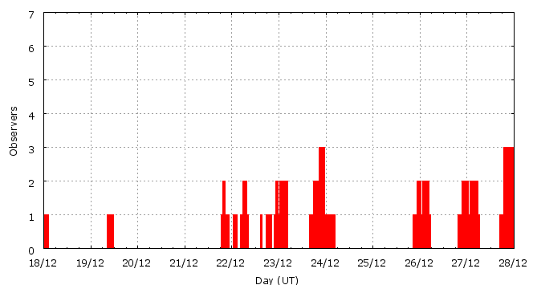

This page shows automated results of the Ursids 2008, based on visual data entered through the IMO electronic report form. Note that these automated results may not be suitable for scientific use; please refer to manual analysis results published in journal papers (e.g., WGN) when available. Send your feedback regarding this page to Geert Barentsen.
Page generated: 2009 April 18 at 16:40 UT.
ZHRmax = 10 based on 119 Ursids in 108 data intervals, assuming fixed population index r = 2.5 and zenith correction 1/sin(hR).

| Time (UT) | Solarlon | nINT | nURS | ZHR | |
|---|---|---|---|---|---|
| 2008-12-18 01:15 | 266.365 | 2 | 1 | 2 | ±1 |
| 2008-12-19 10:08 | 267.759 | 4 | 4 | 4 | ±2 |
| 2008-12-22 00:01 | 270.385 | 13 | 30 | 10 | ±2 |
| 2008-12-22 10:17 | 270.822 | 11 | 18 | 10 | ±2 |
| 2008-12-23 02:08 | 271.494 | 9 | 21 | 3 | ±1 |
| 2008-12-23 22:28 | 272.357 | 20 | 30 | 3 | ±1 |
| 2008-12-26 01:06 | 274.507 | 18 | 3 | 1 | ±0 |
| 2008-12-27 01:23 | 275.539 | 17 | 5 | 1 | ±0 |
| 2008-12-27 21:27 | 276.392 | 14 | 7 | 1 | ±0 |
For each estimation interval: time is the middle of the interval, nINT is the number of observing periods and nURS is the number of Ursids involved. ZHR = (1 + sum nURS) / sum(Teff/C) where Teff is the effective observing time and C is the total correction for limiting magnitude, clouds and zenith correction. The solar longitudes refer to equinox J2000.0.
Data has been received from 14 observers in 10 countries. Thank you for your efforts!

| Observer | Country | Teff | nURS |
|---|---|---|---|
| Salvador Aguirre | Mexico | 7.00h | 13 |
| Mark Davis | United States | 1.75h | 2 |
| Irena Divisova | Czech Republic | 3.00h | 2 |
| Jaroslaw Dygos | Poland | 2.00h | 10 |
| Sylvie Gorkova | Czech Republic | 3.00h | 1 |
| Vilem Heblik | Czech Republic | 5.08h | 4 |
| Carl Johannink | Netherlands | 6.13h | 4 |
| Javor Kac | Slovenia | 1.69h | 20 |
| Yann Kempf | France | 5.03h | 4 |
| Jakub Koukal | Czech Republic | 21.00h | 45 |
| Peter Van Leuteren | Netherlands | 2.25h | 1 |
| Minghui Liang | China | 0.82h | 1 |
| Koen Miskotte | Netherlands | 8.51h | 2 |
| Michel Vandeputte | Belgium | 12.08h | 10 |
Create your own analysis!
Rate intervals: urs2008_rate.csv (CSV-format).
Magnitude distributions: urs2008_magn.csv (CSV-format).